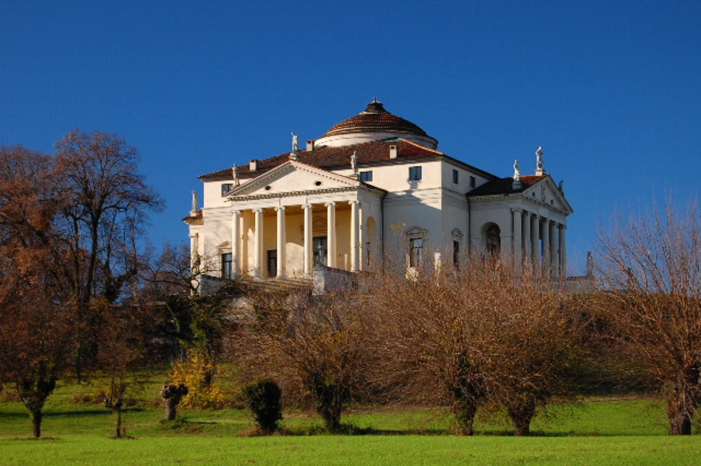
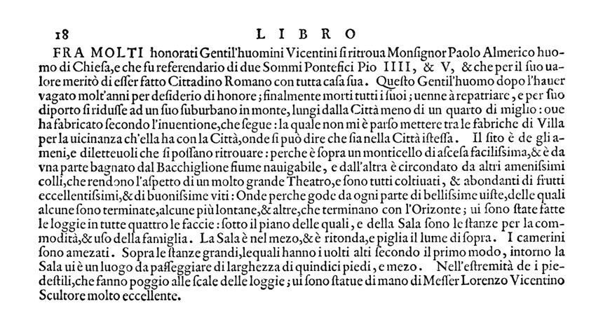

Tutti i metadati
Architetto: Andrea Palladio VIAF
Committente: Almerico Capra Wikidata
Data di costruzione: 1567-1605 Visualizza sulla linea del tempo
Uso attuale: La villa è una residenza privata, ma la famiglia Valmarana (attuale proprietaria) ne consente l'accesso al pubblico.
Struttura: Pianta quadrata simmetrica inscrivibile in un cerchio perfetto (visualizza il progetto)
Posizione: Via della Rotonda, 45, 36100 Vicenza VI
Descrizione
Villa Almerico Capra, detta la Rotonda (nota anche come Villa Capra) è una villa veneta a pianta centrale situata a ridosso della città di Vicenza, poco discosta dalla strada della Riviera Berica. Fatta costruire da Paolo Almerico, che la commissionò ad Andrea Palladio nel 1566-1567, fu completata da Vincenzo Scamozzi nel 1605 per i due fratelli Capra, che avevano acquisito l'edificio nel 1591. La Rotonda, come divenne nota in seguito, è uno dei più celebri ed imitati edifici della storia dell'architettura dell'epoca moderna; è senza dubbio la villa più famosa del Palladio e, probabilmente, di tutte le ville venete. Fa parte dal 1994 dei patrimoni dell'umanità dell'UNESCO.
Prologo del II libro del trattato I quattro libri dell'architettura di Andrea Palladio
In questo estratto, l'architetto parla del conte Almerico Capra e racconta la nascita dell'idea per la costruzione de la Rotonda.

Fra molti onorati gentiluomini vicentini si ritrova monsignor Paolo Almerico uomo di Chiesa e che fu referendario di due sommi Pontefici Pio IV e V e che per il suo valore meritò di esser fatto cittadino Romano con tutta casa sua. Questo Gentiluomo dopo l'aver vagato molti anni per desiderio di onore, finalmente morti tutti i suoim venne a rimpatriare, e per suo diporto si ridusse as un suo suburbano in monte, lungi dalla città meno di un quarto di miglio, ove ha fabbricato secondo l'invenzione, che segue, la quale non mi è parso mettere tra le fabbriche di villa per la vicinanza ch'ella ha con la città, onde si può dire che sia nella città stessa.